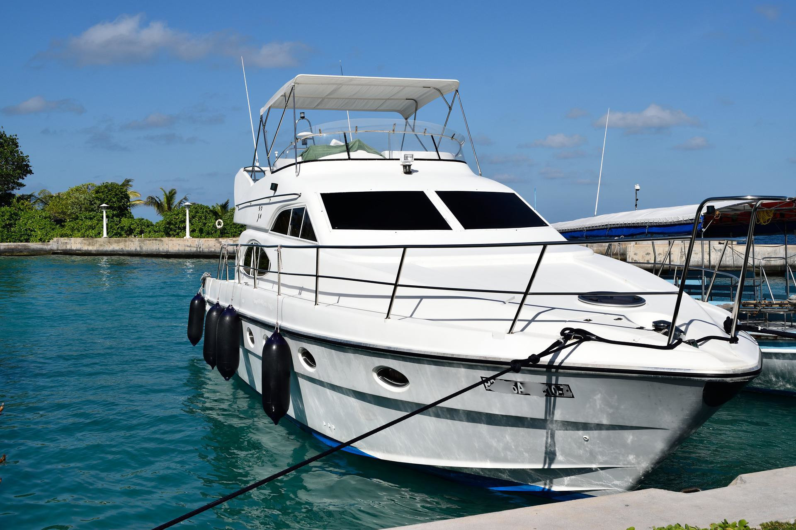

Your own route on the Adriatic
With a rented boat you choose the stops and how long each one lasts. Pula is a good starting point: protected bays, nearby islands and sea that is calm on most days.
- Smaller boats: no licence required and easy to drive
- More powerful boats: a valid boating licence is required
- No licence? A skipper takes care of the driving and knows the quiet spots
- Life jackets, safety equipment and a short briefing included

Where you can go
Brijuni National Park
The islands, from the sea, at your own speed.
Cape Kamenjak
Hidden bays around the southern tip of Istria.
Coves without a road
Beaches you cannot reach by car.
Snorkelling spots
Rocks and clear water for a mask and fins.
How it works
- 1
Tell us your plan
Date, duration, group size and whether you have a licence.
- 2
Get a quote
We suggest a boat and send a price.
- 3
Briefing
A safety briefing and route tips before you leave.
- 4
Sail
Fuel is usually paid by consumption when you return.
Big game fishing
Recommended period: 10 July to 31 October. Departure time is flexible and depends on the captain’s decision, based on the weather and the fishing season.
Half-day trip
About 5 hours. Private charter for up to 5 people. Target species include bluefin tuna, mahi mahi, sharks, mackerel and gilt-head bream.
Full-day trip
About 8 hours. Private charter for up to 5 people or shared charter for up to 4. Target species include bluefin tuna, mahi mahi, sharks and, rarely, swordfish.